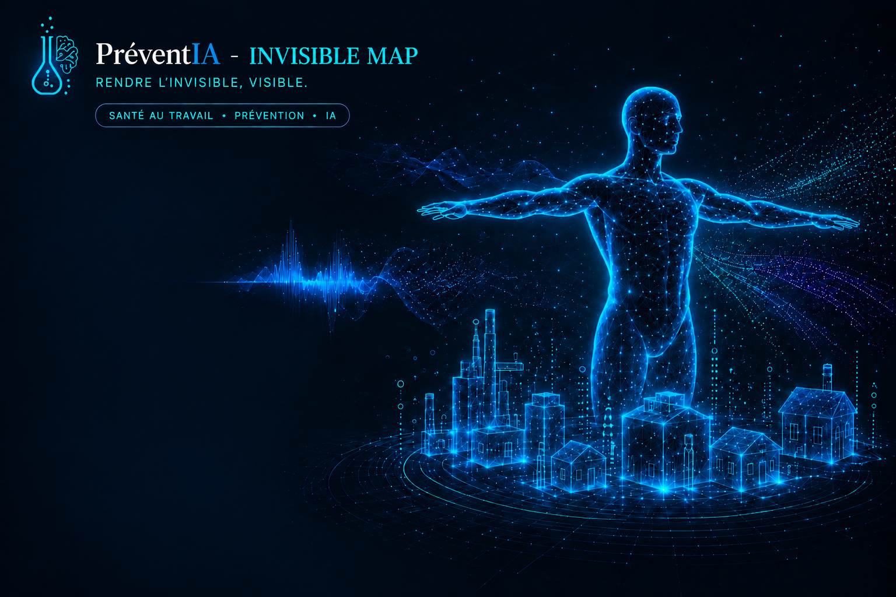

Chaque module suit un parcours pédagogique en 5 étapes. On part de ce que l'on voit — rien — et on finit par agir, preuves visuelles à l'appui. C'est la pédagogie par l'expérience : manipuler pour comprendre.
Chaque module montre l'impact concret d'une action de prévention. Vous activez un tablier plombé, un écran antibruit, une hotte — et vous voyez immédiatement la réduction du risque. C'est ce qui convainc un employeur, un CSE, un directeur d'établissement.
Simulation interactive pour sensibiliser. Pas de mesure réelle — idéal pour la formation, les réunions CSE, les accueils sécurité.
Calculs basés sur des modèles physiques simplifiés. Donne un ordre de grandeur crédible pour orienter l'évaluation des risques.
Intégration de données réelles (sonomètre, dosimètre, capteurs). Pour la métrologie terrain et les rapports réglementaires.
Chaque risque invisible a son module dédié. Même concept, même parcours, mais chaque simulation est adaptée à la physique et à la réalité du terrain.
Visualisez le rayonnement ionisant diffusé autour de l'amplificateur de brillance au bloc opératoire. Particules animées, zones isodoses, loi 1/d², impact des protections (tablier Pb, paravent, scopie pulsée).
Lancer le module →Rendez visible le bruit et les ondes sonores dans l'environnement de travail. Propagation des ondes en temps réel, niveaux dB(A), impact des protections collectives (cloisons, capotage) et individuelles (PICB). Visualisation des seuils réglementaires 80/85/87 dB(A).
Lancer le module →Visualisez les projections chimiques et biologiques invisibles : gaz, vapeurs, gouttelettes, aérosols, nébulisation. Comparez l'exposition avec et sans hotte, avec et sans ventilation, avec et sans EPI. Simulation de la dispersion d'un nuage chimique en milieu professionnel.
Bientôt disponibleExposition au rayonnement ultraviolet en extérieur. Visualisez l'index UV en fonction de l'heure, de la saison, de la localisation. Impact des protections (vêtements, crème solaire, lunettes). Mode caméra UV pour révéler les dégâts cutanés invisibles à l'œil nu : taches, vieillissement prématuré, lésions.
Lancer le module →Rendez visible ce qui souffre sous la peau. Visualisez les contraintes biomécaniques en temps réel : pression sur les disques intervertébraux, tension musculaire, compression des tissus. Vue « rayon X du corps » montrant la souffrance tissulaire en fonction de la posture adoptée.
Lancer le module →Visualisez la concentration de radon à l'intérieur des bâtiments. Simulation de l'accumulation du gaz radioactif en fonction du type d'habitation, de la géologie locale, de la ventilation, de l'étanchéité de la dalle. Zones réglementaires IRSN, seuil 300 Bq/m³, dose efficace.
Lancer le module →